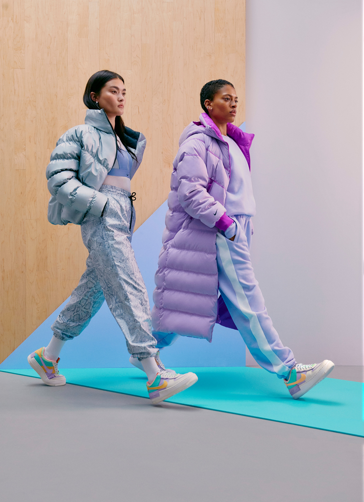

Air Force 1 Shadow
O Nike Air Force 1 Shadow dá um toque divertido no design clássico do basquete. Com uma abordagem em camadas, o dobro da marca e uma entressola exagerada, ele destaca o estilo do AF1 duplicando a diversão.

JUST DO IT

Benefícios
- Duas aberturas, duas proteções contra lama, dois remendos no calcanhar e dois designs Swoosh proporcionam uma estética em camadas, enquanto o suede macio eleva o look.
- Projetado originalmente para jogos de basquete de alto desempenho, o amortecimento Nike Air adiciona leveza para conforto o dia todo.
- O cano curto acolchoado tem um visual elegante e confortável.
- As camadas em couro costuradas na parte de cima trazem estilo, durabilidade e suporte como herança.
